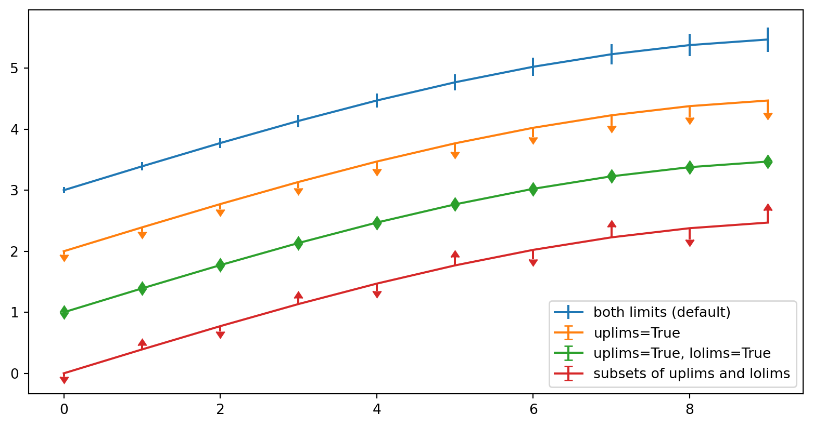

AML-101: Adversarial Machine Learning
Module 01: Course Introduction
Dr. Mahmoud Mahmoud
The University of Alabama
2025-04-25
Introduction
Outline
- Derivatives and Finite Differences
- Computing Jacobians
- Interpretation and Visualization
- Naming and Terminology
Derivatives and Finite Differences
Definition and Approximation
The derivative of a function \(f\) at a point \(x\) is defined as:
\[\frac{df}{dx} = \lim_{h \to 0} \frac{f(x+h) - f(x)}{h}\]
In numerical methods, we approximate derivatives using finite differences:
- Forward difference: \(\frac{f(x+h) - f(x)}{h} \approx f'(x)\)
- Backward difference: \(\frac{f(x) - f(x-h)}{h} \approx f'(x)\)
- Central difference (more accurate): \(\frac{f(x+h) - f(x-h)}{2h} \approx f'(x)\)
Key Considerations
Key considerations: - Error is \(O(h)\) for forward/backward and \(O(h^2)\) for central difference - Smaller \(h\) reduces discretization error but increases floating-point error - Used when analytical solutions are unavailable
Animated Sine Wave
Multivariable Calculus
Multivariable Derivatives
For functions \(f: \mathbb{R}^n \rightarrow \mathbb{R}^m\):
- The derivative is the Jacobian matrix: \[J_{ij} = \frac{\partial f_i}{\partial x_j}\]
- Linearizes function near \(x\): \[f(x + dx) \approx f(x) + J(x) dx\]
Automatic Differentiation
Using PyTorch: Automatic Differentiation
- The vectors point “uphill” on the surface
- They are perpendicular to level curves
- In a future slide, we’ll embed a full vector field visualization
- The vectors point “uphill” on the surface
- They are perpendicular to level curves
- In a future slide, we’ll embed a full vector field visualization
Types of Derivatives
Two Types of Derivatives
Partial Derivatives
- Vary one variable, hold others constant
- Denoted as \(\frac{\partial f}{\partial x}\) or \(f_x\)
- Measures rate of change in one direction
- Example: \(f(x,y) = x^2 + xy\)
- \(\frac{\partial f}{\partial x} = 2x + y\)
- \(\frac{\partial f}{\partial y} = x\)
Directional Derivatives
- Rate of change in any direction
- Denoted as \(\nabla_{\mathbf{v}} f\)
- Computed as \(\nabla f \cdot \mathbf{v}\)
- Gradient \(\nabla f\) points in direction of steepest ascent
- Useful for optimization problems
Code Examples
Visualization Examples

Plotting
NumPy
import matplotlib.pyplot as plt
import numpy as np
fig = plt.figure()
x = np.arange(10)
y = 2.5 * np.sin(x / 20 * np.pi)
yerr = np.linspace(0.05, 0.2, 10)
plt.errorbar(x, y + 3, yerr=yerr, label='both limits (default)')
plt.errorbar(x, y + 2, yerr=yerr, uplims=True, label='uplims=True')
plt.errorbar(x, y + 1, yerr=yerr, uplims=True, lolims=True,
label='uplims=True, lolims=True')
upperlimits = [True, False] * 5
lowerlimits = [False, True] * 5
plt.errorbar(x, y, yerr=yerr, uplims=upperlimits, lolims=lowerlimits,
label='subsets of uplims and lolims')
plt.legend(loc='lower right')
plt.show(fig)
Plotly
Want More?
Scan this QR code or follow the link to explore this and more:
https://www.geogebra.org/m/w7n4cdxj
Thank you!
Thank You!
The University of Alabama